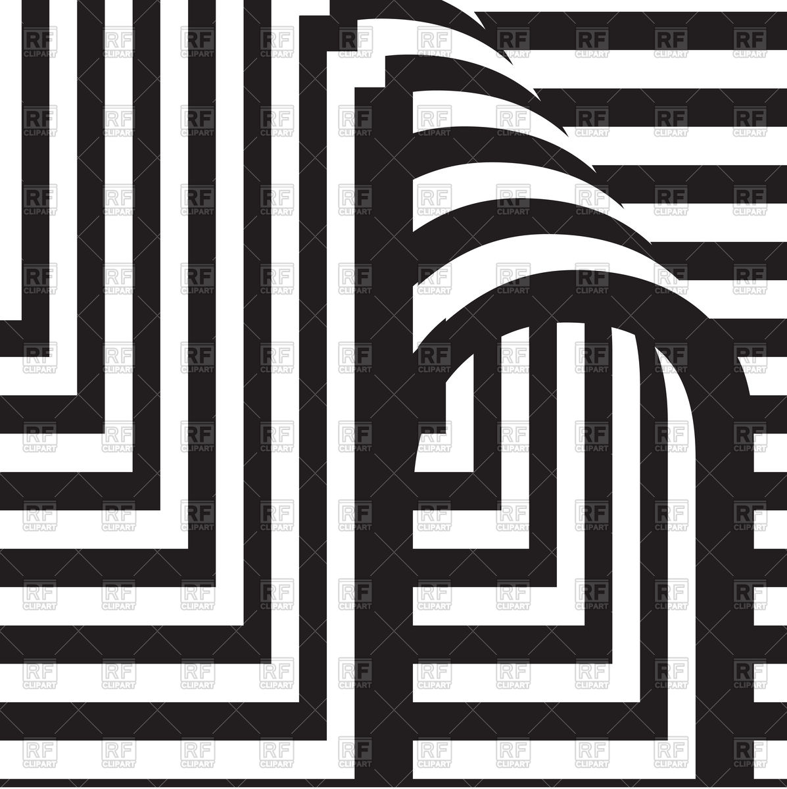

Singh Anubhav Gajendra
Computer Science Engineering Student
1. Secured 3rd position in Photography Competition
2. Secured 60% in Certification exam of Introduction to Mobile App Development from
NPTEL(Feb-Apr 2018)
3. Secured 59% in Certification exam of DSA using Python from NPTEL(Feb-Apr 2018)